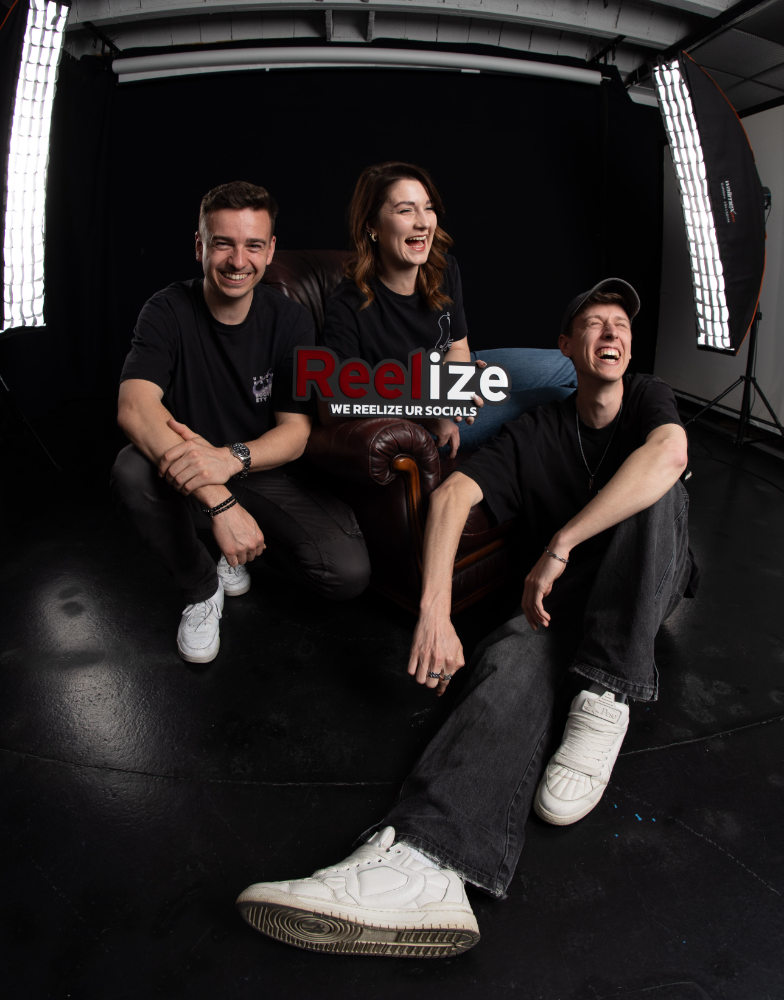
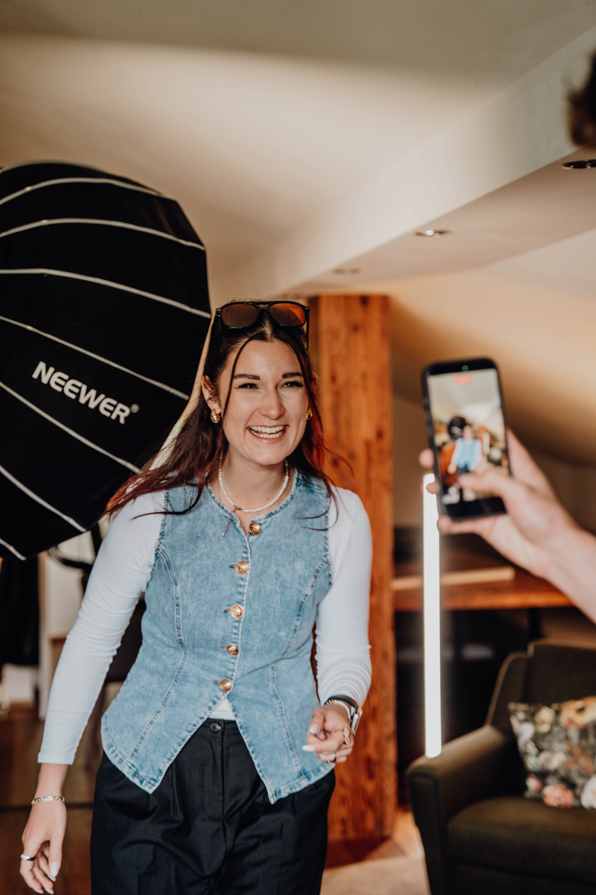
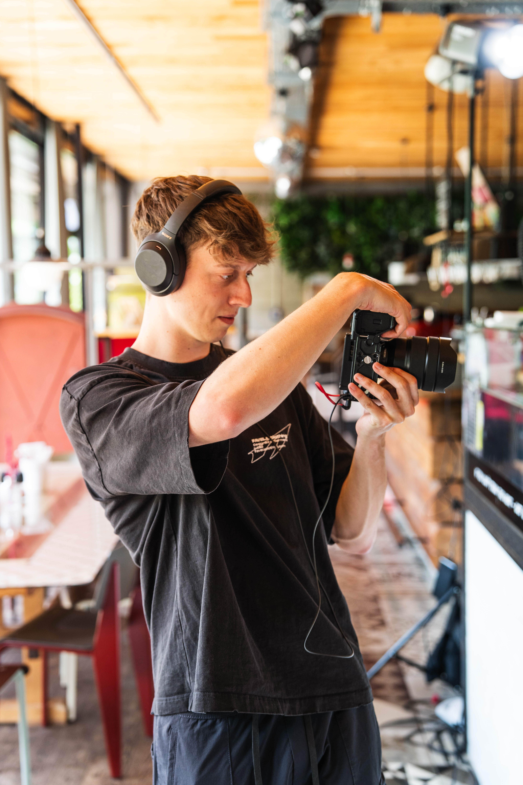
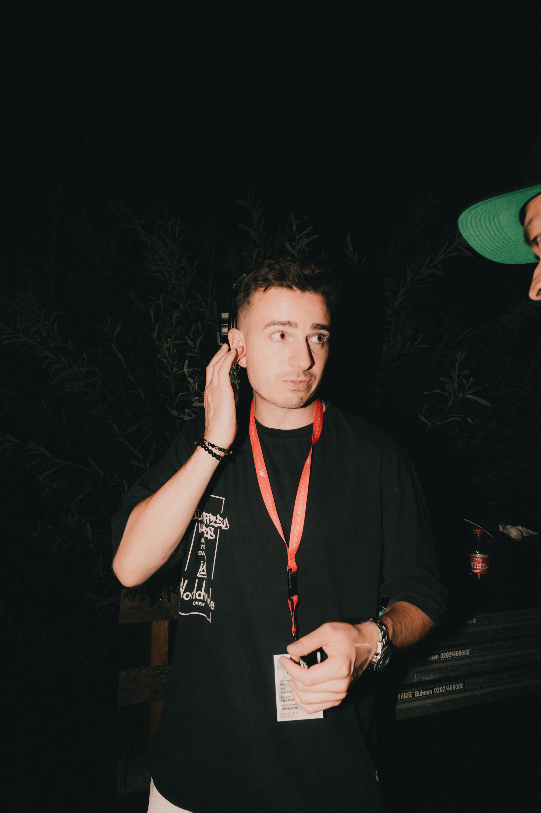

Social Media Content aus einer Hand
Wir produzieren High-Quality-Reels, entwickeln deine Strategie und managen deine Kanäle für organische Reichweite.
MP4 folgt
MP4 folgt
Content der
hängen bleibt
MP4 folgt
MP4 folgt
MP4 folgt
MP4 folgt
MP4 folgt
Von der Idee
bis zum Upload
MP4 folgt
Planung
Klare Content-Ideen, passende Formate und konkrete Skripte. Daraus entsteht deine individuelle Social-Media-Strategie mit festem Redaktionsplan — abgestimmt auf Ziele und Zielgruppe.
Contenttag
Unser Team aus Kameramann und Content Producer setzt die geplanten Inhalte effizient an einem Tag um — mit professionellem Equipment und klarem Ablauf. Danach: Review-Schleife, Optimierung, Thumbnails.
Management
Wir sorgen dafür, dass der Content genau dort wirkt, wo er soll: strukturiertes Veröffentlichen und performante Captions — abgestimmt auf Plattform, Zielgruppe und Algorithmus.
Damit Social Media kein Pain mehr ist
Um auf Social Media wirklich erfolgreich zu sein, fehlt es im Tagesgeschäft meist an mindestens einem von drei Dingen: Zeit, Know-how oder Motivation. Ständig selbst Videos produzieren und schneiden? Ein echter Pain.
Unsere Antwort ist eine stressfreie All-in-One-Lösung: Wir entwickeln eine individuelle Strategie, behalten aktuelle Trends im Blick und kümmern uns um die professionelle Content Creation — während du dich wieder zu 100 % auf dein Kerngeschäft konzentrierst.
MP4 folgt
Lisa, Daniel K. &
Daniel L.
Wir unterstützen Unternehmen bei der erfolgreichen Umsetzung ihres Social-Media-Auftritts. 2023 kam zum ersten Mal die Idee auf, unsere Stärken zu bündeln und ein Konzept zusammenzustellen, mit dem wir Unternehmen einen echten Mehrwert bieten können.
Spoiler: Wir sind nach wie vor auf Events unterwegs — aber mittlerweile nur noch auf denen, die uns Spaß machen ;)




Klingt nach einem Match?
Buch dir ein kostenloses Kennenlerngespräch
unverbindlich und ehrlich.
Häufig gestellte Fragen
Was macht Reelize eigentlich genau?
Wie läuft eine Zusammenarbeit mit Reelize ab?
Für wen ist Reelize der richtige Partner?
Bietet Reelize auch Social-Media-Strategien an?
Was ist der Unterschied zwischen Social-Media-Management und Contentproduktion?
Warum arbeitet Reelize ohne bezahlte Werbung?
Welche Plattformen betreut Reelize?
Wie lange dauert die Umsetzung eines Projekts?
Wie kann ich mit Reelize Kontakt aufnehmen?
Was kostet Social-Media-Management bei Reelize?
Bietet Reelize auch Social-Media-Workshops oder Schulungen an?
Wo arbeitet Reelize überall in Österreich?
Welche Art von Content produziert Reelize?
Wie misst Reelize den Erfolg einer Social-Media-Strategie?
Warum sollte ich mich für Reelize entscheiden?
Lerne uns kennen
Oder schreib uns direkt auf WhatsApp